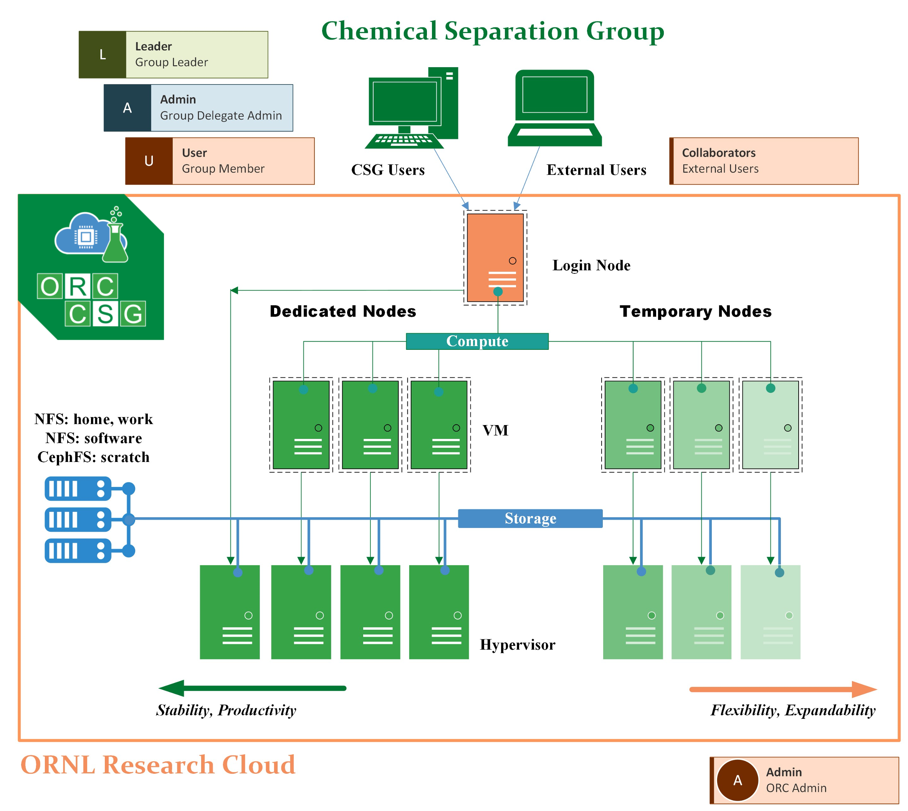
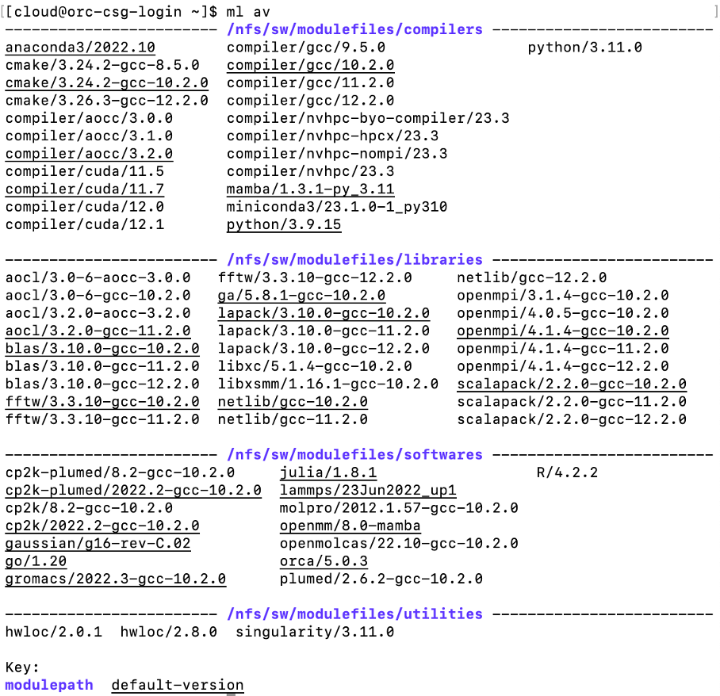

User Guide
1. System Overview
1.1 Document overview and Assumptions
The ORC-CSG system is an active HPC cluster of the Chemical Separation Group running on the ORNL research Cloud computing resource.
This document provides an overview and introduction to the use of the ORC-CSG system.
It would be the most efficient for the current or future users to have these proficient knowledge in prior to using this system:
Experience of using UNIX operating system
Bash script language
A remote compute system which supports network access
Programming knowledge and some experience with libraries
2. Citation Information
**Note:**
The following acknowledgment should be included in publications and presentations that contain work performed using CADES resources: This research used birthright cloud resources of the Compute and Data Environment for Science (CADES) at the Oak Ridge National Laboratory, which is supported by the Office of Science of the U.S. Department of Energy under Contract No. DE-AC05-00OR22725.
3. System Configuration
ORC-CSG is built on
Login |
Standard |
|
|---|---|---|
Total Nodes |
1 |
3 |
Processor |
AMD EPYC 7702 |
AMD EPYC 7702 |
Proc Speed |
2.0 GHz |
2.0 GHz |
Cores/Node |
8 |
120 or 128 |
Total Cores |
8 |
376 |
Memory/Node |
16 GB |
960 GB |
Accelerator |
None |
None |
Storage on Node |
None |
None |
Operating System |
CentOS 8 |
CentOS 8 |

4. Data Storage Resources
Three file systems are implemented in ORC-CSG:
an NFS partition of 950 GB mounted in the
/homedirectory
an NFS partition of 950 GB mounted in the
/nfs/workdirectory
an CephFS partition of 4.0 TB mounted in the
/cephfs/scratchdirectory
Path |
Total Size |
File System |
|---|---|---|
/home |
950 GB |
NFS |
/nfs/work |
950 GB |
NFS |
/cephfs/scratch |
4 TB |
CephFS |
For each user, these file space can be accessed using the environment variables $HOME, $WORKDIR, and $SCRATCH.
The /home and the /nfs/work directories using the NFS, are considered to be more stable than the CephFS. The only difference between users’ $HOME and $WORKDIR directories is that $WORKDIR can be accessed by other users by default. The CephFS is designated to I/O intensitive (frequently read and write data) jobs, especially for computations which need to offload the temporary data storage from memories to hard drive.
When user log in to the ORC-CSG system, the usage status of the three file systems are shown as follows:
~~~~~~~~~~~~~~~~~~~~~~~~~~~~~~~~
Mounted on Size Avail Use%
/home 950G 639G 33%
/nfs/work 950G 715G 25%
/cephfs/scratch 4.0T 3.1T 22%
~~~~~~~~~~~~~~~~~~~~~~~~~~~~~~~~
5. ORC-CSG Access Policies
5.1 Network traffic Policy
Users are permitted to have unlimited time per session in the login node. However, users’s netwrok traffic activities should be stricktly for research purposes.
5.2 File System Policy
Currently, the ORC-CSG system does not enforce a quota for users’ usage in their $HOME, $WORKDIR, or $SCRATCH directories. However, a “good neighbor” policy is expected. The admin would send out notification once the filesystems are loaded.
6. User environment
6.1 Modules
Environmental modules is a modern convenient way to set the proper (versions of) compilers, libraries, and softwares. A number of software modules are installed in ORC-CSG for users to load the correct set of environmental variables.
To check the list of module files available in ORC-CSG, simply do:
% module avail
or
% ml av
Here is an example of the current list of modules.

The command to load a module is:
% module load [module name]
For example, loading the gcc-10.2.0 compiler:
% module load compiler/gcc/10.2.0
For complete information of using the environmental modules, see the Module User Guide.
6.2 Compilers
The dedicated nodes in the ORC-CSG system use the AMD EPYC 7702 CPU, which uses AMD’s ‘Zen 2 Microarchitecture’. The ‘ready-to-use’ compilers in the ORC-CSG system maximize their compatabilities as well as their HPC performance for the Zen-2 architecture. For this architecture, the widely-used CPU compilers (which are also available in ORC-CSG) are
the GNU compiler collection (GCC)
the AMD Optimizing C/C++ and Fortran Compilers (AOCC)
the Intel oneAPI toolkits
Compiler |
version |
Note |
|---|---|---|
GCC |
8.5.0 |
native |
9.5.0 |
||
10.2.0 |
recommended |
|
11.2.0 |
||
12.2.0 |
recommended |
|
AOCC |
3.0.0 |
|
3.1.0 |
||
3.2.0 |
||
oneAPI |
2023.1 |
testing |
Note:
GCC compilers provide the support for the AMD zen 2 architecture since version 9.0.0. The performance might be boosted using the flag
-march=znver2, however, since the login node use the same type of CPU, it is reasonable to compile code there with the flag-march=native.AOCC may bring extra performance compared to GCC compilers, however, it may not be supported by some softwares/applications.
We are still testing the compatibility and performance of the oneAPI compiler.
6.3 Parallel Computing Libraries
A consice list of essential libraries for scientific computing on HPC resources are available in the ORC-CSG system.
Library |
Version |
Compiler |
|---|---|---|
AOCL |
3.0 |
AOCC-3.0.0, GCC-10.2.0 |
3.2 |
AOCC-3.2.0, GCC-11.2.0 |
|
BLAS |
3.10.0 |
GCC-10.2.0,11.2.0,12.2.0 |
FFTW |
3.3.10 |
GCC-10.2.0,11.2.0,12.2.0 |
GA |
5.8.1 |
GCC-10.2.0 |
LAPACK |
3.10.0 |
GCC-10.2.0,11.2.0,12.2.0 |
LibXC |
5.1.4 |
GCC-10.2.0 |
LibXSMM |
1.16.1 |
GCC-10.2.0 |
Netlib |
GCC-10.2.0,11.2.0,12.2.0 |
|
OpenMPI |
4.0.5 |
GCC-10.2.0,11.2.0,12.2.0 |
4.1.4 |
GCC-10.2.0,11.2.0,12.2.0 |
|
ScaLAPACK |
2.2.0 |
GCC-10.2.0,11.2.0,12.2.0 |
6.4 Softwares
Most of the softwares available in the ORC-CSG system are built for the theoretical/computational projects in the Chemical Separations Group. These include but are not limited to:
Quantum chemistry calculations of molecular properties (Gaussian, Molpro, ORCA, CP2K, OpenMolcas)
Excited state quantum chemistry calculations (Gaussian, Molpro, ORCA, CP2K, OpenMolcas)
Molecular dynamics simulations (LAMMPS, GROMACS, CP2K)
Advanced molecular dynamics simulations for free energy calculations (LAMMPS, GROMACS, CP2K)
Advanced molecular dynamics simulations using quantum mechanics (Gaussian, CP2K)
Solid state material calculations (CP2K)
Details of available software can be found in the table below:
Software |
Version |
Compiler |
|---|---|---|
CP2K |
8.2 |
GCC-10.2.0 |
2022.2 |
GCC-10.2.0 |
|
CP2K-plumed |
8.2. |
GCC-10.2.0 |
2022.2 |
GCC-10.2.0 |
|
Gaussian |
g16-rev-C.02 |
|
GROMACS |
2022.3 |
GCC-10.2.0 |
LAMMPS |
23Jun2022_up1 |
GCC-10.2.0 |
Molpro |
2012.1.57 |
GCC-10.2.0 |
OpenMM |
8.0 |
|
OpenMolcas |
22.10 |
GCC-10.2.0 |
ORCA |
5.0.3 |
|
Plumed |
2.6.2 |
GCC-10.2.0 |
Note: All softwares available in the module lists can be directly used upon the module is loaded.
7. Slurm Job Scheduler

7.1 Slurm
The Slurm Workload Manager is the job queuing system or workload management system for ORC-CSG. Users can check the current node status by
% sinfo
and check the current queue status by
% squeue
To submit a batch job, use the following command:
% sbatch [option] <submission-script>
7.2 Quality of Service (QoS)
Quality of Service (QOS) is mainly used to apply different user privileges in the Slurm job scheduler.
There are currently 4 categories of QOS, which are csg_leader (the group lead of the Chemical Separation Group), csg_member (CSG group members), external (members outside the CSG), and staff (the ORC-CSG administrators).
The csg_members QOS currently has unlimited access to the nodes and unlimited number of jobs submitted to the Slurm job scheduler, whereas the external QOS will have limited access to a certain number of nodes and a maximum number of cores in the ORC-CSG system. The staff QOS will have prioritized access to temporary nodes for node setup and performance testing, before delivering the nodes to the users.
Note: There exists a super user. The
csg_leaderQOS has a superior access level to all resources.
7.3 Queue and Queueing Policy
Two queues are used in the ORC-CSG system.
Priority |
Queue Name |
Max Wall Clock Time |
Max Cores Per Job |
Description |
|---|---|---|---|---|
High |
Standard |
14 Days |
376 |
Standard queue |
Low |
Background |
14 Days |
376 |
Killable queue |
At the current stage, since the system is not yet exposed to external users, the jobs are prioritized on a “first-come-first-serve” policy.
7.4 Batch scripts
Here are a few examples of job submission scripts that uses the HPC softwares and applications in the ORC-CSG system.
7.4.1 Example 1: Gaussian 16 (with 30 cores)
#!/bin/bash
#SBATCH -p standard
#SBATCH --nodes=1
#SBATCH --ntasks-per-node=30
#SBATCH -c 1
#SBATCH -J test-gaussian
#SBATCH -t 1:00:00
#SBATCH --mem=0
#SBATCH -o ./slurm-%j.out-%N
#SBATCH -e ./slurm-%j.err-%N
module load gaussian
# Scratch directory already set by module:
#TMPDIR=/cephfs/scratch/${USER}/gauss_scrdir
inputfile="xxx.inp"
outputfile=${inputfile%.inp}.out
export WORK_DIR=${PWD}
# Run g16
g16 ${inputfile} > ${outputfile}
7.4.2 Example 2: Gaussian 16 with constrained memory size
#!/bin/bash
#SBATCH -p standard
#SBATCH --nodes=1
#SBATCH --ntasks-per-node=64
#SBATCH -c 1
#SBATCH -J test-gaussian
#SBATCH -t 1:00:00
#SBATCH --mem=200G
#SBATCH --nodelist=orc-csg-amd-<x>
#SBATCH -o ./slurm-%j.out-%N
#SBATCH -e ./slurm-%j.err-%N
module load gaussian
# Scratch directory already set by module:
#TMPDIR=/cephfs/scratch/${USER}/gauss_scrdir
inputfile="xxx.inp"
outputfile=${inputfile%.inp}.out
export WORK_DIR=${PWD}
# Run g16
g16 ${inputfile} > ${outputfile}
7.4.3 Example 3: Molpro 2021.1
#!/bin/bash
#SBATCH -p standard
#SBATCH --nodes=1
#SBATCH --ntasks-per-node=30
#SBATCH --cpus-per-task=1
#SBATCH -J test-molpro
#SBATCH -t 1:00:00
#SBATCH --mem=0
#SBATCH -o ./slurm-%j.out-%N
#SBATCH -e ./slurm-%j.err-%N
module load molpro
export WORK_DIR=${PWD}
export OMP_NUM_THREADS=${SLURM_CPUS_PER_TASK}
# Scratch directory already set by module:
#TMPDIR=/cephfs/scratch/${USER}/molpro_scratch
filename="xxxxx.com"
# Run molpro
molpro -W scratch -n ${SLURM_TASKS_PER_NODE} -t ${SLURM_CPUS_PER_TASK} -d ${TMPDIR} --no-xml-output ${filename}
7.4.4 Example 4: ORCA 5.0.3
#!/bin/bash
#SBATCH -p test
#SBATCH --nodes=1
#SBATCH --ntasks-per-node=30
#SBATCH -c 1
#SBATCH -J test-orca
#SBATCH -t 2:00:00
#SBATCH --mem=0
#SBATCH -o ./slurm-%j.out-%N
#SBATCH -e ./slurm-%j.err-%N
module load orca
inputfile="xxxx.inp"
xyzfile="xxxxxx.xyz"
wfnfile=${inputfile%.inp}.gbw
outputfile=${inputfile%.inp}.out
# Scratch directory already set by module:
#TMPDIR=/cephfs/scratch/${USER}/orca_scratch
export WORK_DIR=${PWD}
ORCA_JOB_ID="orca_$(date +%F-%H%M%S)"
if [ "x${TMPDIR}" == "x" ]; then TMPDIR=${PWD}; fi
mkdir -p ${TMPDIR}/${ORCA_JOB_ID}
cp ${inputfile} ${TMPDIR}/${ORCA_JOB_ID}
cp ${xyzfile} ${TMPDIR}/${ORCA_JOB_ID}
cp ${wfnfile} ${TMPDIR}/${ORCA_JOB_ID}
cd ${TMPDIR}/${ORCA_JOB_ID}
# Run ORCA 5
$(which orca) ${inputfile} > ${outputfile}
# End of execution
cd ${WORK_DIR}
cp ${TMPDIR}/${ORCA_JOB_ID}/* .
rm -r ${TMPDIR}/${ORCA_JOB_ID}
7.4.5 Example: CP2K 8.2.0
#!/bin/bash
#SBATCH -p standard
#SBATCH --nodes=1
#SBATCH --ntasks-per-node=30
#SBATCH --cpus-per-task=2
#SBATCH -J test-cp2k
#SBATCH -t 1:00:00
#SBATCH --mem=0
#SBATCH -o ./slurm-%j.out-%N
#SBATCH -e ./slurm-%j.err-%N
module load cp2k
inputfile="xxx.inp"
outputfile=${inputfile%.inp}.out
export WORK_DIR=${PWD}
# Run CP2K
export OMP_NUM_THREADS=${SLURM_CPUS_PER_TASK}
mpirun cp2k.psmp -i ${inputfile} > ${outputfile}